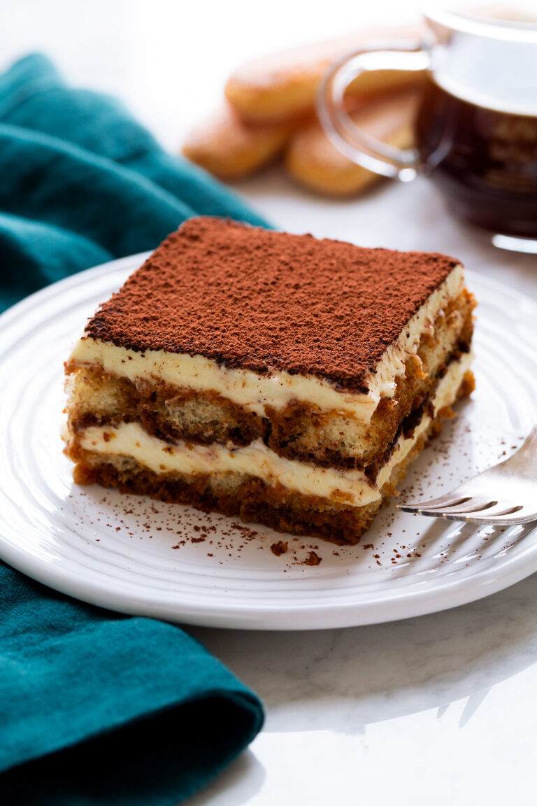

Home
Tiramisu

Description
A decadent Tiramisu
Ingredients
- 1 cup Warm Espresso
- 40-45 Lady Fingers
- 16 ounces Mascarpone Cheese
- 2 Tablespoons Rum
- 4 Eggs
- 1/2 cup Granulated Sugar
- 2 cups Heavy Whipping Cream
- 1/2 teaspoon Vanilla Extract
- 1/8 teaspoon Salt
- Cocoa Powder
Steps
- Set aside a 9x13 inch baking pan with 12-14 cup capacity
- Dip half of the ladyfingers: You will
form 2 layers each of dipped ladyfingers and mascarpone cream.
One at a time, quickly dip each side of the ladyfinger into the
espresso. Arrange the dipped ladyfingers in the baking pan to
make one solid layer.
- Begin the mascarpone cream: With a
handheld or stand mixer fitted with a paddle or whisk attachment,
beat the mascarpone and rum together on medium speed in a large
bowl for a few seconds, just to combine. Do not overmix. Set aside.
- Prepare the egg yolks: Place a heatproof bowl
over a small pot of simmering water over medium-low heat. Don't
let the water touch the bottom of the bowl. Using a whisk, whisk
the egg yolks and 1/4 cup of granulated suger together until light
and foamy, about 5 minutes. Remove from the heat and immediately
pour into the mascarpone mixture. Beat on medium speed until combined.
- Whip the heavy cream: Beat the heavy cream
and vanilla extract together on medium-high speed until medium
peaks form, about 3 minutes. Fold the whipped cream into the
mascarpone mixture.
- Beat the egg whites: Beat the egg whites and
salt together on medium-high speed until foamy, about 1 minute.
Increase to high speed and slowly pour in the remaining 1/4 cup
of sugar. Beat until stiff peaks form, about 4-5 minutes. Fold into
the mascarpone cream.
- Spread half of the mascarpone cream evenly over bottom layer
of ladyfingers.
- Dip remaining ladyfingers: Dip remaining
ladyfingers into remaining espresso mixture and arrange one-by-one
on top of the mascarpone layer. Gently press each down so they are
nice and compact. Using an offset spatula, spread remaining mascarpone
mixture evenly on top. Refrigerate uncovered for 2-3 hours.
- Add cocoa layer, then chill: After a couple hours
in the refrigerator, sift or strain a dense layer of cocoa powder all
over the top. Cover with plastic wrap or aluminum foil, then refrigerate
for at least 8-9 more hours and up to 1 day.